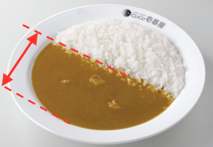

マニュアルテスト（調理編 #1）
Q1
CoCo壱番屋の考える良い商品とはどういうものでしょうか？
Q2
ライス盛りについて
盛り始める時のお皿の温度は、何℃以上でなければならないでしょうか？
Q3
ライスの量が400gで3品のミックスがある場合の使用するお皿として適切なのはどれでしょう？
Q4
ライスの量の誤差は各規定量のプラスマイナス何g以内でしょうか？
Q5
次の揚げ物の揚げる時間の組み合わせとして正しいのはどれでしょうか？
ロースカツ、フライドチキン、ソーセージ、なす
Q6
ルーがけについて
ルーを火入れする際、温度が何℃になったら火入れが完了でしょうか？
Q7
ルーがけについて
ライス300gに対してソースの量は何gでしょうか？
Q8
以下の写真のようにルーがけではルーの距離が大体何cmくらいになるのが理想的でしょうか？

Q9
商品提供時の各温度について適切なのはどれでしょう？
①お皿の表面温度 ②ライスの表面温度 ③ソースの表面温度
Q10
とび辛について注意することはなんでしょう？